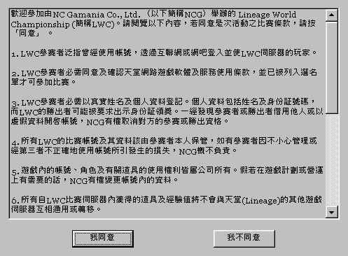
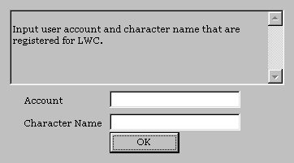
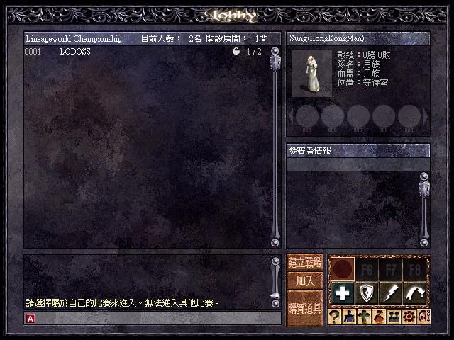
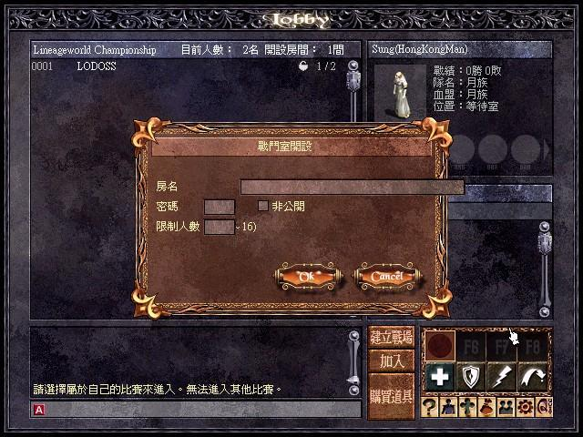
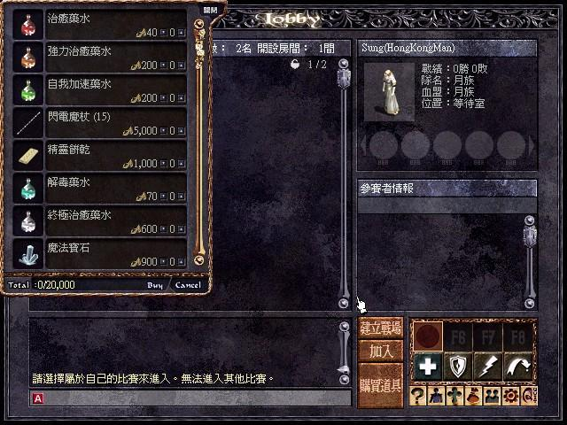
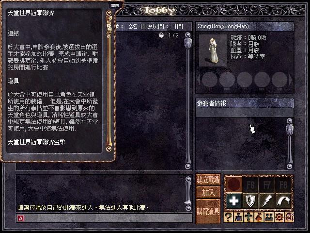

2003年1月9日 香港LWC開始試玩了！ 來源：香港天堂LWC官方網站公告 入圍香港LWC 16強的玩家有福了，因為他們可以率先測試未來的Lineage Tournament！入圍者可以都官方網站下載LWC的用戶端，之後便可以使用練功伺服器上的角色與其他玩家在比賽前練習了！以下為LWC的一些抓圖：      
新浪網正式宣佈與NCsoft組成合資公司推出網路遊戲天堂 
來源：新浪網發佈會（簡體字），大家在當中更可以看到發佈會的圖片及錄像呢！相信《天堂》這個名稱亦是"Lineage"在中國大陸的正稱譯名。另外中國大陸天堂官方網站可能禁止了其他已有天堂服務的地區登上，所以一直也連不上。 新浪聯手全球最大網絡游戲公司推出《天堂》
http://www.sina.com.cn 2003年01月08日 14:57 新浪科技
新浪科技訊 北京時間1月8日消息，2003年開始，全球領先的中文媒体与網絡服務公司新浪在北京宣布，攜手韓國最大的網絡游戲供應商NCsoft公司，進軍網絡游戲產業，并正式推出全球排名第一的經典游戲《天堂》。 NCsoft公司是全球最大的網絡游戲公司，其成名作《天堂》是目前韓國最流行的網絡游戲，在2001年曾創下了2億美元的營收記錄﹔据2002年美國權威机构的調查統計，《天堂》
全世界會員人數已經接近一億，同時在線人數超過100萬。它的惊人魅力使其成為全球最成功的網絡游戲產品。現在，讓無數中國玩家渴望和期待已久的《天堂》就要正式登陸中國了。提起《天堂》，一位資深游戲玩家興奮地表示：“太棒了，盼星星盼月亮，我們終于盼到了《天堂》。早就聽許多海外玩家都在推荐它。現在，我們終于也可以自己連線玩了。我真恨不得現在就上線先睹為快。”相信《天堂》必將點燃新年里網絡游戲的“第一把火”，成為國內玩家2003年的首選。 新浪CEO茅道臨表示，此次新浪与NCsoft的合作，瞄准的就是互聯網經濟中成長最迅速的網絡游戲市場。新浪將利用其強大的品牌和用戶优勢，提供強有力的市場和運營支持。NCsoft公司則將提供更多的游戲和后續幵發支持。“与NCsoft這樣實力強勁的業界領先者合作，讓我們對未來充滿了期待，希望通過整合雙方的資源优勢，共同推進中國網絡游戲產業的發展，為中國玩家提供更多、更好的在線游戲精品。” NCsoft公司首席執行官金澤辰表示，“新浪是一家銳意進取的納斯達克上市企業，优勢明顯，并擁有成為中國網絡游戲行業領導者的雄心，無疑是NCsoft進軍中國市場最佳的合作伙伴。” 有預測顯示，在因特網這一新興媒介的推動下，全球娛樂与傳媒業在今后几年內將以每年7.2%的速度增長，2005年將達到1.2萬億美元的規模。而其中全球游戲市場的收入預計將達到499億美元，這在很大程度上得益于新游戲的推出。据CCID的調查顯示，中國網絡游戲產業在2002年底已達到10億元人民幣的市場規模，中國網絡文化市場日益發揮出巨大的發展潛力。 据不完全統計，我國已經有超過50家的游戲代理公司，在市場上推出了100多种網絡游戲，網絡游戲市場競爭也日趨激烈。業內人士普遍認為，《天堂》的推出，勢必對當前的几款熱門游戲造成巨大的沖擊和壓力。 据悉，北京新浪互聯信息服務有限公司將代理《天堂》在中國的運營和推廣，上海新浪樂谷公司將為此游戲提供相應的技術和幵發支持。出任新浪樂谷公司CEO的新浪總裁汪延高興地說：“新年送好禮，《天堂》就是新浪在新年里為中國玩家獻上的第一份大禮。我們有信心使《天堂》在中國取得和全球市場一樣的佳績。我們會以此為幵端，陸續推出更多的优秀網絡游戲產品，帶領大家暢游神祕的網絡世界。” 業內人士認為，隨著《天堂》的上市，我國的網絡游戲將得到更進一步的普及，從而帶來網絡游戲產業以及相關行業的又一次發展熱潮。而新浪与NCsoft的成功合作，也為中韓兩國高新技術企業間的合作做出了有益的探索和嘗試，并將對整個IT及網絡相關產業產生不可限量的影響，讓我們拭目以待！ |